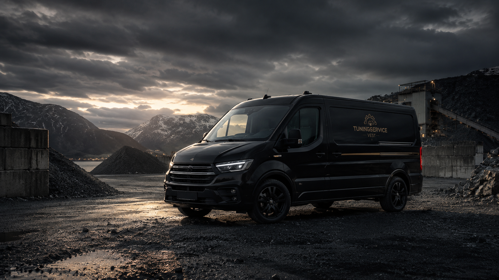
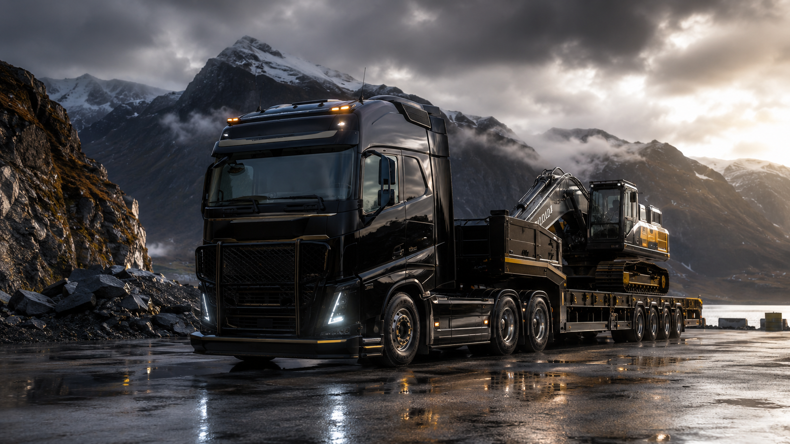
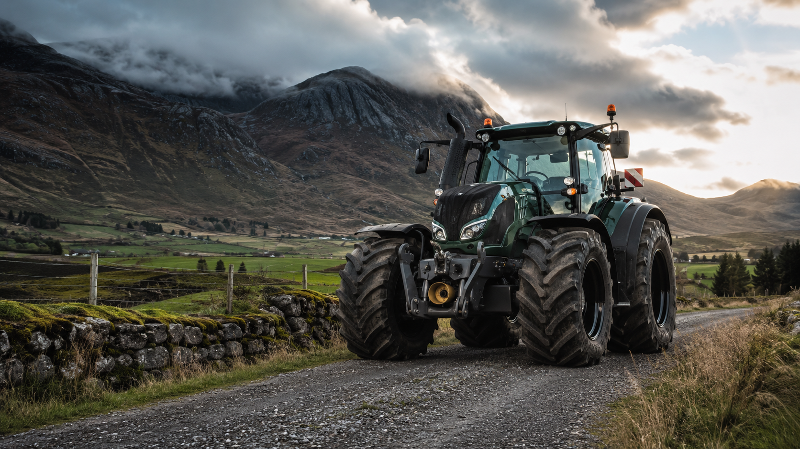
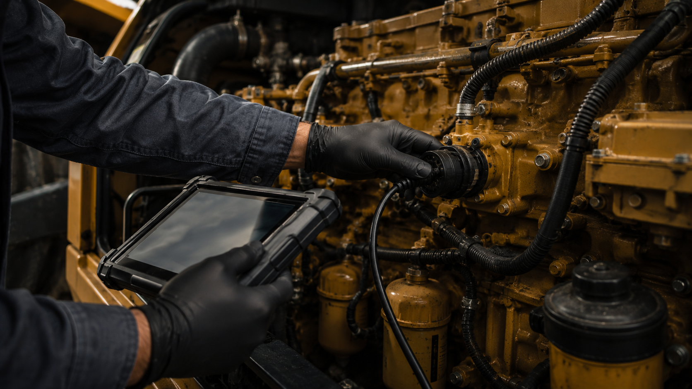

Tuningservice Vest tilbyr rask og effektiv diagnose, feilsøking, reparasjon og optimalisering av eksosrensesystemer og AdBlue-systemer. Vi kommer til deg – minimer nedetid og maksimer driftstid.
Ring 948 09 710Minimer nedetid – vi er på plass når du trenger oss.
Over 25 års erfaring med diagnose og optimalisering av maskiner.
Markedets beste priser på ekspertservice.
Feilsøking, rengjøring og reparasjon av DPF, DOC, SCR og EGR-systemer.
Diagnose og reparasjon av AdBlue-systemer, NOx-sensorer, pumpe, dyse og komponenter.
Avansert diagnose med moderne utstyr – raskt og treffsikkert.
Programmering, koding og optimalisering av styreenheter på kjøretøy og maskiner.
Vi er mobile og utfører service der maskinen står – spar tid og penger.
TuningService ble opprettet i 2011 og er en videreføring av et tidligere firma. Vi har vært i bransjen siden 2007 og har med det god erfaring innen optimalisering av kjøretøy.
Grunnet ekspertise, konkurransedyktige priser og ikke minst programvare som er blant markedets beste, har vi blitt et anerkjent merke i Norge.
Tuningservice Vest bygger videre på denne erfaringen og tilbyr mobil diagnose, feilsøking og teknisk hjelp i hele Vestland. Vår kombinasjon av kompetanse og fleksibilitet gjør at vi kan hjelpe deg der maskinen står, slik at du sparer både tid og penger.




For raskare hjelp, send gjerne registreringsnummer, køyretøy- eller maskinmodell, feilmelding eller bilde, eventuelle feilkodar og kvar køyretøyet eller maskina står.
Vi kommer dit du er i hele Vestland